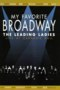

VÍDEOS CONCIERTOS DE TEATRO MUSICAL
MUSICAL THEATRE CONCERT VIDEOS
MUSICAL THEATRE CONCERT VIDEOS
| Portada Cover |
Titulo Title |
Año Year |
Idioma Language |
Formato Format |
Resolución Resolution |
Elenco Cast |
Notas Notes |
|---|---|---|---|---|---|---|---|
 |
Absolut Uwe | 2009 | DE | mp4 | 576p | Uwe Kröger, Pia Douwes | |
| ALW's Birthday in the Park | 2008 | EN | mp4 | 480p | Joss Stone, Steve Balsamo, Jason Donovan, Idina Menzel, Duncan James, Jonathan Ansell, Denise Van Outen, Andrew Johnston, Lee Mead, Hayley Westenra, Philip Achille, Julian Lloyd Webber, Dean Collinson, Ramin Karimloo and Gina Beck, Rhydian, Maria Friedman, Ruthie Henshall, Shonagh Daly, Elaine Paige, Jodie Prenger | ||
| Andrew Lloyd Webber - The Royal Albert Hall Celebration | 1998 | EN | mp4 | 576p | Antonio Banderas, Glenn Close, Elaine Paige, Tina Arena, Kiri Te Kanawa, Donny Osmond, Sarah Brightman, Bonnie Tyler, Andrew Lloyd Webber, Michael Ball, Julian Lloyd Webber | ||
| Andrew Lloyd Webber the Premiere Collection Encore | 1992 | EN | mp4 | 576p | Elaine Paige, Fei Xiang, Sandy Lam, Andrew Lloyd Webber, John Bowles | ||
| Andrew Lloyd Webber: Masterpiece | 2001 | EN | mp4 | 576p | Michael Ball, Sarah Brightman, José Carreras, Michael Crawford, Jason Donovan, David Essex, Steve Harley, Paul Miles-Kingston, Diana Morrison, Cliff Richard, Phillip Schofield, Glenn Webster | ||
| Barbara Cook: Mostly Sondheim | 2003 | EN | mp4 | 480p | Barbara Cook, Wally Harper | ||
| Beauty and the Beast: A 30th Celebration | 2022 | EN | mp4 | 1080p | H.E.R., Josh Groban, Joshua Henry, Martin Short, David Alan Grier, Shania Twain, Rita Moreno, Jon Jon Briones, Elle Naomi, Leo A. Perry, Rizwan Manji, Nicholas Stewart, Charissa Kroeger, Chris Grabher, Holidai Frazier | ||
| Bernadette Peters in Concert | 1998 | EN | mp4 | 480p | Bernadette Peters | ||
| The Best of Broadway Musicals | 2003 | EN | mp4 | 480p | Len Cariou, Bea Arthur, Nathan Lane, Lauren Bacall, Nell Carter, Barbara Cook, Tyne Daly, Jennifer Holliday, Angela Lansbury, Chita Rivera, Phyllis Newman | ||
| Broadway Backwards | 2021 | EN | mp4 | 720p | Jen Coella, Stephanie J. Block, Deborah Cox, Lea Salonga, Joshua Buscher-West, Marty Lawson, Alfie Parker Jr., Waldemar Quinones-Villanueva, Alex Ringler, Ryan Steele, Darren Criss, Ward Billeisen, Michael James Scott, Chita Rivera, Gaelen Gilliland, Eric Petersen, Lee Bair, Debra Monk, Tituss Burgess, Steven Cutts, Brandon Pearson, Dennis Stowe, Curtis Wiley, Tony Yazbeck, Eddie Korbich, Michael McElroy, Bryan Terrell, Cynthia Erivo, Andrew Keenan-Bolger, Andy Kelso, Len Cariou, Carolee Carmello, Andrew Rannells, Ariana DeBose, Sheryl Lee Ralph, Tony Shalhoub, Ben Vereen, Amy Adams, James Monroe Iglehart, Cheyenne Jackson, Telly Leung, Eric McCormack, Debra Messing, =Brian Stokes Mitchell, Jessie Mueller, Kelli O’Hara, Karen Olivo, Bernadette Peters, Elizabeth Stanley, Debbie Allen, Matt Bomer, Brenda Braxton, Glenn Close, Loretta Devine, Jesse Tyler Ferguson, Javier Muñoz, Jim Parsons, Roslyn Ruff, Anderson Cooper, Don Lemon | ||
 |
Broadway's Lost Treasures | 2003 | EN | mp4 | 480p | Julie Andrews, Vivian Blaine, Yul Brynner, Betty Buckley, Joel Grey, Bob Gunton, Steven Hack, Richard Kiley, Angela Lansbury, Andrea McArdle, Patricia Morison, Zero Mostel, Jerry Orbach | |
| Broadway's Lost Treasures II | 2004 | EN | mp4 | 480p | Gregory Hines, Nathan Lane, Bea Arthur, Katharine Hepburn, Jerry Orbach, Lauren Bacall, Bebe Neuwirth, Brian Stokes Mitchell, Patti LuPone, Angela Lansbury, Robert Morse, Jane Lapotaire, Richard Kiley, Nell Carter, Michael Jeter, Brent Barrett, Walter Bobbie, George Hearn, Shirley Verrett, Robert Lindsay, Tom Bosley, Kathi Moss, Bill Hutton | ||
| Broadway's Lost Treasures Iii | 2005 | EN | mp4 | 480p | Julie Andrews, Ethel Merman, Angela Lansbury, Gwen Verdon, Ray Walston, Chita Rivera, Jerry Orbach, Vanessa Williams, Debbie Allen, Michel Bell, Tony Roberts, Alfred Drake, Harry Groener, Desi Arnaz, Robert Goulet, Zero Mostel, Kristin Chenoweth, Jonathan Pryce | ||
| A Celebration of the Music from Coco | 2020 | EN | mp4 | 1080p | Anthony Gonzalez, Eva Longoria, Benjamin Bratt, Lee Unkrich, Jaime Camil, Felipe Fernández del Paso, Sarah Hicks, Natalia Jiménez, Rudy Mancuso, Luis Gerardo Méndez, Miguel, Carlos Rivera, Alanna Ubach | ||
| Colm Wilkinson in Concert | 1997 | EN | mp4 | 576p | Colm Wilkinson | ||
| Diva | 2006 | EN | mp4 | 480p | Paloma San Basilio, Plácido Domingo | ||
| Diva 2001 | 2001 | EN | mp4 | 480p | Maki Ichiro | ||
 |
Diva 2004 | 2004 | EN | mp4 | 480p | Maki Ichiro | |
| Elaine Paige at the BBC | 2022 | EN | mp4 | 720p | Elaine Paige | ||
| Elaine Paige Celebrating 40 Years on Stage | 2009 | EN | mp4 | 480p | Elaine Paige | ||
| Elaine Stritch at Liberty | 2002 | EN | mp4 | 576p | Elaine Stritch | ||
| Encanto at the Hollywood Bowl | 2002 | EN | mp4 | 1080p | Lin-Manuel Miranda, Stephanie Beatriz, Adassa, Carolina Gaitán, Jessica Darrow, Diane Guerrero, Mauro Castillo, Angie Cepeda, Olga Merediz, Carlos Vives, Andrés Cepeda | ||
| An Evening With Andrew Lloyd Webber | 1982 | EN | mp4 | 576p | Andrew Lloyd Webber, Placido Domingo, John Lill, Suzi Quatro, Finola Hughes | ||
| Gala Jubileuszowa Teatru Roma | 2003 | EN | mp4 | 480p | |||
| Gerónimo Rauch 'Entre Miserables Y Fantasmas' | 2014 | ES | mp4 | 1080p | Gerónimo Rauch | ||
| Gran Gala De Stage Entertainment: 15 Aniversario | 2014 | EN | mp4 | 480p | Daniel Diges, Guido Balzaretti, Talía del Val, Lydia Fairén, Carlos Solano, Ignasi Vidal, Enrique R. del Portal, Eva Diago | ||
| Hey Mr Producer! | 1998 | EN | mp4 | 576p | Julie Andrews, Lea Salonga, John Barrowman, Russ Abbot, Peter Bayliss, Brian Blessed, David Campbell, Judi Dench, Hal Fowler, Maria Friedman, Ellen Greene, Ruthie Henshall, Hugh Jackman, David Kernan, Andrew Lloyd Webber, Jimmy Logan, Millicent Martin, Julia McKenzie, Paul Nicholas, Bernadette Peters, Clarke Peters, Philip Quast, Joanna Riding, Liz Robertson, Ned Sherrin, Donald Sinden, Stephen Sondheim, Sonia Swaby, Colm Wilkinson, Jonathan Pryce, Michael Ball, Elaine Paige, Kye Brackett, Laurie Holloway, Jasna Ivir, Teddy Kempner, Monroe Kent III, Trent Kendall, Tom Lehrer, Julian Lloyd Webber, Jason Pennycooke, Adam Searles, Richard D. Sharp, Dana Stackpole, Lisa Vroman, Marie Zamora, Lynda Bellingham, Christopher Biggins, Ann Emery, Tricia George, Su Pollard, James Byng | ||
 |
Jerry Herman's Broadway | 1994 | EN | mp4 | SD | Bea Arthur, Carol Channing, Angela Lansbury, Lorna Luft, Rita Moreno, Liza Minnelli, Leslie Uggams, Michael Feinstein, George Hearn | |
| Ken Page at 54 Below | 2022 | EN | mp4 | 1080p | Ken Page | ||
| Levay With Friends | 2010 | KO, DE | mp4 | 480p | Kim Jun Su, Uwe Kröger, Shin Young-sook, Seo Bum-suk, Bae Hae Sun, Sylvester Levay | ||
| Lyrics by Tim Rice | 1985 | EN | mp4 | 576p | Tim Rice, Paul Gambaccini, Benny Andersson, Barbara Dickson, David Essex, Murray Head, Hank B. Marvin, Elaine Paige, Marti Webb, Paul Nicholas, Colm Wilkinson | ||
| Mクンツェ&sリーヴァイの世界 | 2012 | EN | mp4 | SD | Yuichiro Yamaguchi, Zen Ishikawa, Yoshio Inoue, Maki Ichiro, Yuko Doi, Seiko Niizuma, Patrick Stanke | ||
| The Magic of the Musicals | 1992 | EN | mp4 | 576p | Marti Webb, Mark Rattray | ||
| The Music of Andrew Lloyd Webber | 1992 | EN | mp4 | 480p | Sarah Brightman, Gary Mauer, Ty Taylor, Sharon Brown, Jimmy Lockett, Tami Tappan, Cathy Porter, Gay Willis, David Malek, Michael Gerhart, Deanna Welles, Eric Scott Kincaid | ||
 |
Musical Highlights From the Royal Variety Show | 2014 | EN | mp4 | 576p | Various Artists | |
| Musicals in Ahoy | 2002 | EN | mp4 | SD | Simone Kleinsma, Pia Douwes, Stanley Burleson, Danny de Munk, Maaike Widdershoven, Tony Neef, Chaira Borderslee, Bastiaan Ragas, Antje Monteiro, Ryan van den Akker, Sophia Wezer, Addo Kruizinga, Linda Wagenmakers, Willem Nijholt, Henk Poort, Ernst-Daniël Smid, Liesbeth List, Bill van Dijk, Joke de Kruijf, Chantal Janzen, Joost de Jong, Claudia de Graaf, Mariska van Kolck, Nurlaila Karim, Ellen Evers | ||
| Musicals in Ahoy | 2004 | EN | mp4 | SD | Simone Kleinsma, Danny de Munk, Pia Douwes, Stanley Burleson, Joke de Kruijf, Bastiaan Ragas, Tooske Breugem, Chantal Janzen, Nurlaila Karim, Tony Neef, Dick Cohen, Henk Poort, Carlo Boszhard | ||
| Musicals in Ahoy | 2006 | EN | mp4 | SD | Chantal Janzen, Stanley Burleson, Danny de Munk, Carolina Dijkhuizen, Antje Monteiro, Jamai Loman, Nurlaila Karim, Maike Boerdam, Renée van Wegberg, Anita Meijer, Hans Klok, Kim-Lian van der Meij | ||
| Musicals in Concert | 2014 | EN | mp4 | 576p | Chantal Janzen, Simone Kleinsma, Freek Bartels, René van Kooten, Carolina Dijkhuizen, Stanley Burleson, Jamai Loman | ||
 |
Musicals: The Greatest Show | 2021 | EN | mp4 | 720p | Sheridan Smith, Elaine Paige, Michael Ball, Kerry Ellis, Amanda Holden, Aisha Jawando, Ramin Karimloo, Idina Menzel, Nicole Raquel Dennis, Lea Salonga, Nicole Scherzinger, Gavin Spokes, Ivano Turco, Layton Williams, Jac Yarrow, Jack Loxton, Sam Tutty, Kate Graham, Mazz Murray, Jo Napthine, Courtney Bowman, Sophie Isaacs, Alexia McIntosh, Natalie Paris, Jarneia Richard-Noel, Danielle Steers, Lucy Anderson | |
|  | My Favorite Broadway: The Leading Ladies | 1999 | EN | mp4 | 480p | Julie Andrews, Nell Carter, Lea DeLaria, Linda Eder, Jennifer Holliday, Dee Hoty, Anna Kendrick, Judy Kuhn, Priscilla Lopez, Dorothy Loudon, Rebecca Luker, Marin Mazzie, Andrea McArdle, Audra McDonald, Liza Minnelli, Debra Monk, Bebe Neuwirth, Faith Prince, Elaine Stritch, Karen Ziemba, Robert Morse, Tony Roberts, Luther Henderson | |
| A Night in at the Theatre – Andrew Lloyd Webber’s Symphonic Suites | 2021 | EN | mp4 | 720p | The Andrew Lloyd Webber Orchestra | ||
| One Night Only: The Best of Broadway | 2020 | EN | mp4 | 1080p | Tina Fey, Annaleigh Ashford, Antonio Banderas, Kristen Bell, David Bryan, Kelly Clarkson, Aaron de Jesus, Jeanna De Waal, Damon Duanno, Brett Eldredge, Sutton Foster, Kathryn Gallagher, Peter Gallagher, Lana Gordon, Josh Groban, Jake Gyllenhaal, Sean Hayes | ||
| Paloma San Basilio en Vivo | 1985 | ES | mp4 | 576p | Paloma San Basilio, Plácido Domingo | ||
| Patti Lupone Matters of the Heart | 1999 | EN | mp4 | 480p | Patti LuPone | ||
| Patti Lupone on Broadway | 1995 | EN | mp4 | 480p | Patti LuPone | ||
| The Show Must Go On! | 2021 | EN | mp4 | 720p | Ginny Kim, Kristen Blodgette, Andrew Lloyd Webber, Danny Shin, Gareth Hewitt Williams, Serin Kasif, Ed Pierce, Larry Allen, Paul Warwick Griffin, Beverley Knight, Ju Yeol Yea, Kyung Joo Nam, Ji-Min Park | ||
| Sommernacht Des Musicals | 2008 | DE | mp4 | 576p | Reinhard Brussmann, Pia Douwes, Yngve Gasoy-Romdal, Maya Hakvoort, Jerzy Jeszke, Jessica Kessler, Maricel, Felix Martin, David Moore, Peti van der Velde | ||
| Sondheim: A Celebration at Carnegie Hall | 1992 | EN | mp4 | 480p | Liza Minnelli, Bernadette Peters, Patti LuPone, Glenn Close, Betty Buckley, Bill Irwin, Victor Garber, Paul Gemignani, Susan Stroman | ||
| Sondheim! The Birthday Concert | 2010 | EN | mp4 | 480p | David Hyde Pierce, Laura Benanti, Matt Cavenaugh, Michael Cerveris, Victoria Clark, Jenn Colella, Jason Danieley, Joanna Gleason, Nathan Gunn, George Hearn, Blaine Hoven, Patti LuPone, Marin Mazzie, Audra McDonald, John McMartin, Donna Murphy, Karen Olivo, Laura Osnes, Mandy Patinkin, Bernadette Peters, Maria Riccetto, Bobby Steggert, Elaine Stritch, Jim Walton, Chip Zien, Paul Gemignani, Yani Marin, Shina Ann Morris, Angelina Mullins, Kat Nejat, Jennifer Sanchez, Tanairi Sade Vazquez, Stephen Sondheim | ||
| Stars and the Moon: Betty Buckley Live at the Donmar | 2001 | EN | mp4 | 576p | Betty Buckley | ||
| Stephen Sondheim's 75th: The Concert | 2005 | EN | mp4 | 480p | Jason Alexander, James Barbour, Carol Burnett, Len Cariou, Barbara Cook, Stephanie D'Abruzzo, Jason Danieley, Alexander Gemignani, Josh Groban, Anne Hathaway, Angela Lansbury, Marin Mazzie, Eric McCormack, Audra McDonald, Bernadette Peters, Elaine Stritch, Jubilant Sykes, Vanessa Williams, Adam Wylie | ||
| Steve Barton Memorial Concert | 2002 | EN, DE | mp4 | 576p | Pia Douwes, Lenneke Willemsen, Thomas Borchert, Sylvester Levay, Michael Kunze, Viktor Gernot, Caroline Vasicek, Gernot Kranner, Aris Sas, Bruno Grassini, Cornelia Zenz, Jan Merchant, Marleen van der Loo, Jeroen Phaff, Sören Fenner, Ina Wolf | ||
| Take Me to the World: A Sondheim 90th Birthday Celebration | 2020 | EN | mp4 | 1080p | Jake Gyllenhaal, Raúl Esparza, Laura Benanti, Alexander Gemignani, Neil Patrick Harris, Katrina Lenk, Iain Armitage, Annaleigh Ashford, Christine Baranski, Michael Cerveris, Melissa Errico, Beanie Feldstein, Sutton Foster, Maria Friedman, Josh Groban, Ann Harada, Austin Ku, Judy Kuhn, Linda Lavin, Kelvin Moon Loh, Patti LuPone, Lin-Manuel Miranda, Audra McDonald, Brian Stokes Mitchell, Donna Murphy, Kelli O'Hara, Mandy Patinkin, Bernadette Peters, Ben Platt, Randy Rainbow, Lea Salonga, Stephen Schwartz, Thom Sesma, Elizabeth Stanley, Meryl Streep, Aaron Tveit, Brandon Uranowitz, Chip Zien, Mary-Mitchell Campbell, Paul Wontorek, Victor Garber, Steven Spielberg, Lonny Price, Joanna Gleason, John Weidman, Jason Alexander, Nathan Lane | ||
| Tim Rice: A Life in Song | 2014 | EN | mp4 | SD | Tim Rice, Michael Grade, Rob Brydon, Alexander Armstrong, Roger Daltrey, Tim Michin, Frances Ruffelle, Cynthia Erivo, Julian Ovenden, Rufus Wainwright, Sophie Ellis-Bextor, Tom Chaplin, James Fox, Seth Lakeman, Diana Vickers, Laura Mvula | ||
| Tribute to Angela Lansbury | 2012 | EN | mp4 | SD | |||
| Wales in the West End | 1997 | EN | mp4 | 576p | Victor Spinetti, Aled Jones, Michael Ball, Peter Karrie, Bryn Terfel | ||